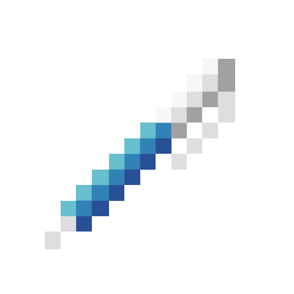

Wellington Nogara
Development Analyst | Magento | Wordpress
-

-

-

- 
-

Sobre
Trabalho como Analista de Desenvolvimento, focado na criação e manutenção de funcionalidades para ecommerces como Magento 1 e 2, também plugins WooCommerce.
Formado em Análise e Desenvolvimento de Sistemas na FATEC de Mogi Mirim.
Sempre gostei muito da área da T.I, então a todo momento estudo sobre o assunto com muita curiosidade e vontade. Já vivenciei experiências como Analista de Suporte, Estagiário de T.I, Estagiário de DevOps e atualmente estou como Analista de Desenvolvimento.
Meu inglês é intermediário, consigo pesquisar muito bem conceitos técnicos e ler.
Tecnologias conhecidas.
Níveis de conhecimento para ficar mais fácil entender minha familiaridade com cada uma, sendo: Baixo, Médio, Alto e Muito Experiente.

Linux - Execução de comandos no dia a dia, tanto para lazer quanto para servidores. Alto
Magento 1 e 2 - Conhecimento sobre o backend e frontend da plataforma. Alto

Wordpress - Desenvolvimento e manutenção de plugins e temas. Alto

GitHub - Utilizo para todo projeto ou documentação que preciso fazer, estou bem familiarizado com a ferramenta. Alto

HTML - Muita familiaridade com a estruturação de páginas. Muito Experiente
CSS - Estou utilizando a um bom tempo em todos os projetos que faço e desenvolvo. Alto

JavaScript - Realizado varios ajustes e novas funcionalidades para projetos utilizando essa tecnologia. Alto

PHP - Utilizo principalmente no desenvolvimento de módulos/plugins em plataformas como Magento e Woocommerce. Alto
Docker - Entendo bem o conceito e utilizo no dia a dia todas as aplicações separadas por docker, mas apenas utilizo ambientes que já foram criados e configurados. Médio
Vue.js - Já estudei sobre o framework e adorei, mas nunca utilizei em nenhum projeto real. Baixo
Python - Já realizei alguns estudos sobre a linguagem, mas apenas criei funcionalidades básicas. Baixo
NGINX - Já utilizei esse servidor WEB, mas sempre foram em servidores já configurado e raramente fiz pequenos ajustes nas configurações. Baixo
Apache - Utilizo no meu dia a dia sempre, mas nunca realizei nenhum configuração muito complexa, apenas o básico para utilização local. Médio
GrayLog - Sempre utilizo para analisar o tráfego de requisições nas lojas em produção. Alto

Godot - Utilizo para desenvolver jogos no meu tempo livre, apenas para brincar e me divertir como hobbie, possui uma linguagem própria conhecida como GDscript(Inspirada no JS) ela é extremamente similar a JavaScript. Medio

Java - Já desenvolvi no passado vários projetos para a faculdade e pessoais, mas não continuei estudando ou utilizando. Baixo
Possuo conhecimento e experiencia com outras tecnologias além dessas apresentadas acima, mas para não deixar muito grando o campo, deixei apenas as mais importantes. Para mais informações basta entrar em contato comigo!
Experiência
WIDECOMMERCE SERVICOS PARA INTERNET LTDA
Development Analyst
Inicio: Dezembro de 2021 | Até: Emprego atual.
Desenvolvimento de projetos do zero sendo eles Magento 1, 2 ou Woocommerce Wordpress, implementação de novas funcionalidades nos wordpress ou magento's, novas ideias para melhorar e otimizar tarefas internas da empresa.
Auxiliar de Programação
Inicio: Setembro de 2021 | Até: Dezembro de 2021.
Além das funções anteriores de Estagiário de Devops também... Auxiliar no desenvolvimento de e-commerce Magento 1 e 2, desenvolvendo novas funções e aprimorando já existentes tanto backend quanto frontend, realizando alterações de layout e realizando chamados para suprir as necessidades dos clientes.
Estagiário DevOps
Inicio: Setembro de 2020 | Até: Setembro de 2021.
Configuração de servidores Linux utilizando como infraestrutura Amazon Lightsail e Server4You, configuração de Nginx com Docker para suporte às lojas virtuais Magento 1 e 2, instalação e desenvolvimento de novas funcionalidades para Magento, monitoramento de acessos/logs dos sistemas através de GrayLog, Zabbix e NewRelic.
BUENO GESTAO AMBIENTAL LTDA
Estagiário de tecnologia da informação
Inicio: Março de 2019 | Até: Agosto de 2020.
Instalação, configuração e alteração de usuário, liberação de acessos na rede, instalar e configurar servidores e serviços de rede, planejar e implementar estruturas de segurança de redes, realizar treinamentos com usuários da empresa sobre como proteger os dados e a privacidade online, auxiliar na utilização do ERP/software da empresa.
CLARO - RENATA SOATO ALDIGHERI - ME
Analista de Suporte Júnior
Inicio: Maio de 2018 | Até: Março de 2019.
Atividades de instalação, configuração, manutenção e formatação de computadores, configurar impressora de rede, realização de backup, manutenção e criaçãos dos servidores, implantação e monitoramento de câmeras IP/CFTV, manutenção/atualização dos softwares como: conectividade social e sistemas da linha SAGE.
Projetos
Cliente - Desenvolvido para um cliente com o objetivo de exibir as qualidades de uma pousada, assim pessoas entrariam em contato para alugar. Projeto criado apenas utilizando o Wordpress como CMS, mas toda a estrutura principal feita com HTML5 e CSS3.
Cliente - Projeto feito para uma lojista que gostaria de começar a vender online, feito em WooCommerce.
Estudos - Aprendendo sobre a criação de sites utilizando wordpress como plataforma.
Estudos - Jogo de ping pong com uma IA como adversário, projeto desenvolvido com objetivo de aprender mais sobre JavaScript, Canvas e Inteligência Artificial.
Estudos - Foi criado para aprender a desenvolver temas para wordpress.
Formação Acadêmica
Graduado em Análise e Desenvolvimento de Sistemas | FATEC
Formado em Dezembro de 2021.
Licenças e Certificados
Curso de Magento 1 - Back End | Magenteiro
Realizado em Outubro de 2022.
CERTIFICATE of Web Applications Security | StudySection
Realizado em Julho 2021.
DevOps Essencials | 4Linux
Realizado em Outubro de 2022.
CERTIFICATE of Extreme Programming | StudySection
Realizado em Fevereiro de 2021.
Unity I | Alura
Realizado em dez de 2020.
AVANÇANDO COM PHP: ARRAYS, STRINGS, FUNÇÃO E WEB | Alura
Realizado em Outubro de 2020.
Introdução ao PHP: Primeiros passos com a linguagem | Alura
Realizado em Outubro de 2020.
Linux I : Conhecendo e Utilizando o Terminal | Alura
Realizado em Outubro de 2020.
Linux II : Programas, Processos e Pacotes | Alura
Realizado em Outubro de 2020.
Introduction to Cybersecurity | Cisco Networking Academy
Realizado em Março de 2020.
LGPD - Lei Geral de Proteção de Dados | Associação Comercial e Industrial de Mogi Guaçu
Realizado em Março de 2020.
Analista de Segurança da Informação Sr | eSecurity
Realizado em Janeiro de 2020.
Wireshark Para Iniciantes | DLTEC do Brasil
Realizado em Dezembro de 2019.
MikroTik para Iniciantes | Redes Brasil
Realizado em Setembro de 2019.
Introdução à Segurança da Informação | eSecurity
Realizado em Julho de 2019.
Contato
- GitHub
- Download Currículo
Telefone para contato: (19)98610-5076 - Whatsapp e Ligação.